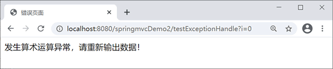

首页 > 编程笔记
Spring MVC异常处理
在 Spring MVC 应用的开发中，不管是操作底层数据库，还是业务层或控制层，都会不可避免地遇到各种可预知的、不可预知的异常。我们需要捕捉处理异常，才能保证程序不被终止。
Spring MVC 有以下 3 种处理异常的方式：
示例 1：下面使用 @ExceptionHandler 注解实现。定义一个处理过程中可能会存在异常情况的 testExceptionHandle 方法。
下面在同一个类中定义处理异常的方法。
异常页面 error.jsp 代码如下。
示例 2：在 net.biancheng.exception 包中创建一个 HandlerExceptionResolver 接口的实现类 MyExceptionHandler，代码如下。
示例 3：在 springmvc-servlet.xml 中配置全局异常，代码如下。
Spring MVC 有以下 3 种处理异常的方式：
- 使用 Spring MVC 提供的简单异常处理器 SimpleMappingExceptionResolver。
- 实现 Spring 的异常处理接口 HandlerExceptionResolver，自定义自己的异常处理器。
- 使用 @ExceptionHandler 注解实现异常处理
1. @ExceptionHandler
局部异常处理仅能处理指定 Controller 中的异常。示例 1：下面使用 @ExceptionHandler 注解实现。定义一个处理过程中可能会存在异常情况的 testExceptionHandle 方法。
@RequestMapping("/testExceptionHandle")
public String testExceptionHandle(@RequestParam("i") Integer i) {
System.out.println(10 / i);
return "success";
}
显然，当 i=0 时会产生算术运算异常。下面在同一个类中定义处理异常的方法。
@ExceptionHandler({ ArithmeticException.class })
public String testArithmeticException(Exception e) {
System.out.println("打印错误信息 ===> ArithmeticException:" + e);
// 跳转到指定页面
return "error";
}
注意：该注解不是加在产生异常的方法上，而是加在处理异常的方法上。异常页面 error.jsp 代码如下。
<%@ page language="java" contentType="text/html; charset=UTF-8"
pageEncoding="UTF-8"%>
<!DOCTYPE html PUBLIC "-//W3C//DTD HTML 4.01 Transitional//EN" "http://www.w3.org/TR/html4/loose.dtd">
<html>
<head>
<meta http-equiv="Content-Type" content="text/html; charset=UTF-8">
<title>错误页面</title>
</head>
<body>
发生算术运算异常，请重新输出数据！
</body>
</html>
访问地址：http://localhost:8080/springmvcDemo2/testExceptionHandle?i=0，页面跳转到 error.jsp 页面，运行结果如图 1 所示。

图 1：error.jsp页面
控制器输出结果如下。
图 1：error.jsp页面
打印错误信息 ===> ArithmeticException:java.lang.ArithmeticException: / by zero
@ExceptionHandler 注解定义的方法优先级问题：例如发生的是 NullPointerException，但是声明的异常有 RuntimeException 和 Exception，这时候会根据异常的最近继承关系找到继承深度最浅的那个@ExceptionHandler 注解方法，即标记了 RuntimeException 的方法。使用局部异常处理，仅能处理某个 Controller 中的异常，若需要对所有异常进行统一处理，可使用以下两种方法。被 @ExceptionHandler 标记为异常处理方法，不能在方法中设置别的形参。但是可以使用 ModelAndView 向前台传递数据。
2. HandlerExceptionResolver
Spring MVC 通过 HandlerExceptionResolver 处理程序异常，包括处理器异常、数据绑定异常以及控制器执行时发生的异常。HandlerExceptionResolver 仅有一个接口方法，源码如下。
public interface HandlerExceptionResolver {
@Nullable
ModelAndView resolveException(
HttpServletRequest request, HttpServletResponse response, @Nullable Object handler, Exception ex);
}
发生异常时，Spring MVC 会调用 resolveException() 方法，并转到 ModelAndView 对应的视图中，返回一个异常报告页面反馈给用户。示例 2：在 net.biancheng.exception 包中创建一个 HandlerExceptionResolver 接口的实现类 MyExceptionHandler，代码如下。
package net.biancheng.exception;
import java.util.HashMap;
import java.util.Map;
import javax.servlet.http.HttpServletRequest;
import javax.servlet.http.HttpServletResponse;
import org.springframework.web.servlet.HandlerExceptionResolver;
import org.springframework.web.servlet.ModelAndView;
public class MyExceptionHandler implements HandlerExceptionResolver {
@Override
public ModelAndView resolveException(HttpServletRequest arg0, HttpServletResponse arg1, Object arg2,
Exception arg3) {
Map<String, Object> model = new HashMap<String, Object>();
// 根据不同错误转向不同页面（统一处理），即异常与View的对应关系
if (arg3 instanceof ArithmeticException) {
return new ModelAndView("error", model);
}
return new ModelAndView("error-2", model);
}
}
在 springmvc-servlet.xml 文件中添加以下代码。
<!--托管MyExceptionHandler--> <bean class="net.biancheng.exception.MyExceptionHandler"/>再次访问 http://localhost:8080/springmvcDemo2/testExceptionHandle?i=0，页面跳转到 error.jsp 页面，运行结果如上图 1 所示。
3. SimpleMappingExceptionResolver
全局异常处理可使用 SimpleMappingExceptionResolver 来实现。它将异常类名映射为视图名，即发生异常时使用对应的视图报告异常。示例 3：在 springmvc-servlet.xml 中配置全局异常，代码如下。
<bean class="org.springframework.web.servlet.handler.SimpleMappingExceptionResolver">
<!-- 定义默认的异常处理页面，当该异常类型注册时使用 -->
<property name="defaultErrorView" value="error"></property>
<!-- 定义异常处理页面用来获取异常信息的变量名，默认名为exception -->
<property name="exceptionAttribute" value="ex"></property>
<!-- 定义需要特殊处理的异常，用类名或完全路径名作为key，异常页名作为值 -->
<property name="exceptionMappings">
<props>
<prop key="ArithmeticException">error</prop>
<!-- 在这里还可以继续扩展对不同异常类型的处理 -->
</props>
</property>
</bean>
再次访问 http://localhost:8080/springmvcDemo2/testExceptionHandle?i=0，页面跳转到 error.jsp 页面，运行结果如上图 1 所示。关注公众号「站长严长生」，在手机上阅读所有教程，随时随地都能学习。内含一款搜索神器，免费下载全网书籍和视频。

微信扫码关注公众号